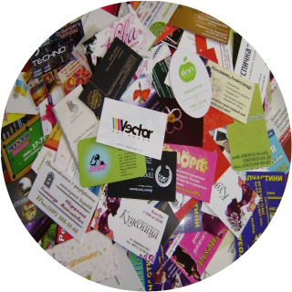
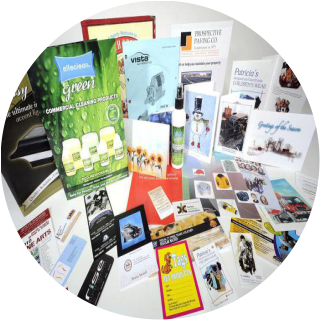

Печать фотографий разных
размеров (10x15,A4)
Фотография нужна для того чтобы её можно было показать
или посмотреть в любое время. Чтобы сохранить воспоминания.
У человека очень хорошо развита визуальная память, поэтому,
когда мы смотрим на фотографии к нам приходят воспоминания
из прошлого.

Печать визитных карточек
Очевидно, что визитка нужна абсолютно всем и каждому,
кто планирует заводить личные или профессиональные знакомства и связи.
Удобный и практичный аксессуар не только делает процесс обмена
контактными данными удобнее, но и является неотъемлемым
составляющим элементом имиджа.

Полиграфическая продукция
Осуществляем продажу буклетов, листовок, флаеров,
бланков, брошюр, календарей, конвертов, этикеток и т.д.

Сувенирная продукция
В Европе промо-сувениры в рекламных целях
используют уже давно. Владельцы крупных компаний
дарят своим сотрудникам и партнерам по бизнесу
подарки, несущие основную информацию о предприятии
(название, логотип, контакты). Это автоматически повышает
уровень доверия и располагает к сотрудничеству.
Сувенирная продукция – мощный рекламный
инструмент, который вызывает позитивные эмоции
и создает приятное впечатление о компании.
Цветная и чёрно-белая печать
Печать в короткие сроки, по низким ценам
Тверская область, город Осташков,
улица Урожайная, дом 7
+7 (915)-713-10-75
fotovizitki.ostashkov@mail.ru
.png)